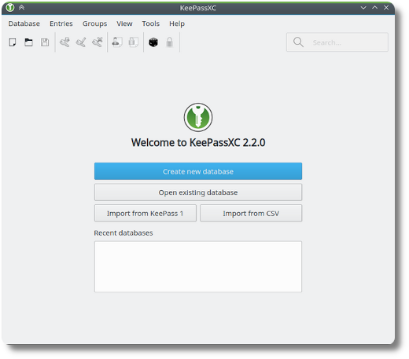

Programmtipp: KeePassXC
Vor ein paar Tagen bin ich auf den Passwortmanager KeePassXC umgestiegen. Der Auslöser war, das der vorher verwendete Passwort(PW)-Manager von meiner Linux-Distribution nicht mehr angeboten wurde.
Screenshot vom KeePassXC-Startfenster, hier in Englischer Sprache, Quelle: KeePassXC Homepage
Warum habe ich mich für KeePassXC entschieden?
Weil es ein OpenSource offline-Passwortmanager ist, der aktiv entwickelt wird und nette Features mitbringt. Wichtig ist mir zum Beispiel die Auto-Fill-Option mit der man durch eine Tastenkombination (Strg-Shift-V) den Benutzernamen und das Passwort auf einer Internetseite ausfüllen lassen kann. Wie bei vielen anderen PW-Managern gibt es einen Passwort-Generator und man kann die Passwörter in Kategorien einsortieren.
Sehr schön ist auch, dass man im unteren Bereich die Informationen zu einem Account direkt sieht, ohne ihn extra aufklappen zu müssen. Einfaches Anklicken reicht. Und man kann sehr einfach nach einem Account suchen, indem man oben in der Suchleiste einen Begriff, beispielsweise den Namen der Hausbank, eintippt. Dann werden automatisch nur noch die Accounts angezeigt, die dem Suchbegriff entsprechen.
Ebenso ein nettes Feature: Das Programm existiert sowohl für Linux, als auch für macOS und Windows.
Wie bin ich zu KeePassXC gewechselt?
Da KeePassXC nur wenige Dateiformate versteht, von denen man Passwörter
importieren kann, habe ich zunächst das original, KeePass installiert und die Passwörter in meinem alten
PW-Manager in eine unverschlüsselte Textdatei exportiert. Diese Datei
habe ich nicht auf die Festplatte, sondern unter /dev/shm
gespeichert, einem Bereich, der nur im Arbeitsspeicher des Rechners
existiert. So bleiben nach einem Reboot des Rechners keine
unverschlüsselten Passwörter auf der Festplatte zurück. Diese Datei habe
ich dann mit KeePass importiert und als .kdbx Datei verschlüsselt
gespeichert. Dies ist das normale KeePass-Format und kann auch von
KeePassXC gelesen werden.
Damit war der Umzug auch schon fast abgeschlossen. Ich musste allerdings noch ein paar kleinere Korrekturen in KeePassXC vornehmen, da der Import nicht immer fehlerfrei geklappt hat. Aber zeitsparender, als alle Accounts manuell zu übernehmen, war es allemal.